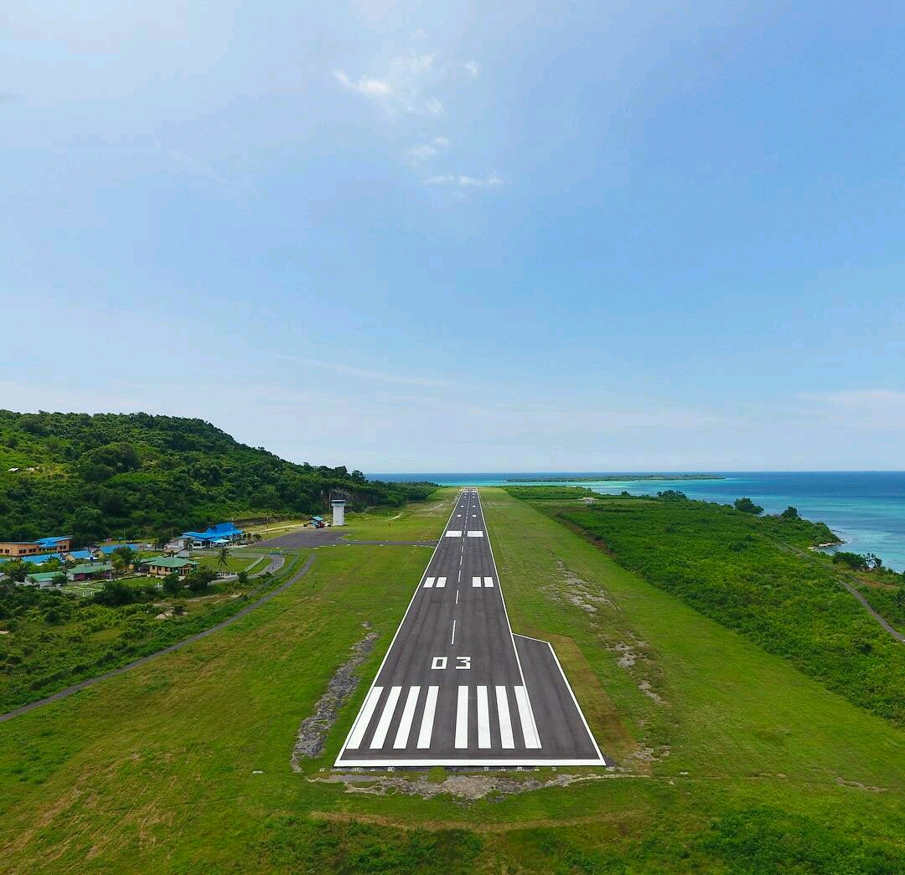
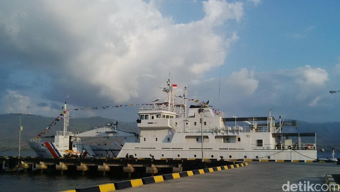
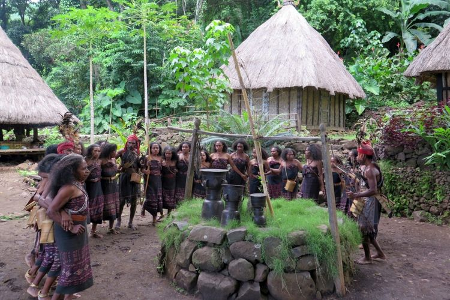
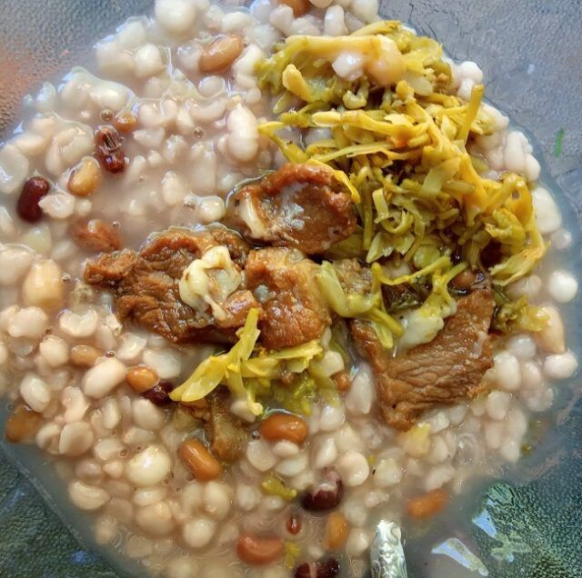
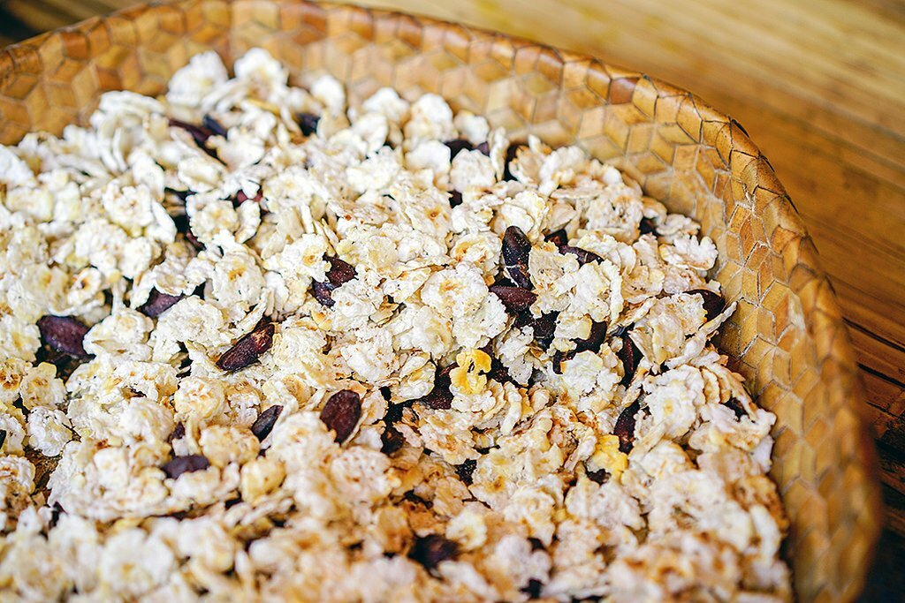
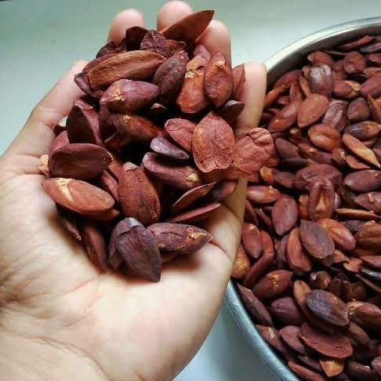

Kabupaten Alor
Sejarah
Menurut cerita yang beredar di masyarakat Alor, kerajaan tertua di Kabupaten Alor adalah kerajaan Abui di pedalaman pegunungan Alor dan kerajaan Munaseli di ujung timur pulau Pantar. Suatu ketika, kedua kerajaan ini terlibat dalam sebuah Perang Magic. Mereka menggunakan kekuatan-kekuatan gaib untuk saling menghancurkan. Munaseli mengirim lebah ke Abui, sebaliknya Abui mengirim angin topan dan api ke Munaseli. Perang ini akhirnya dimenangkan oleh Munaseli. Konon, tengkorak raja Abui yang memimpin perang tersebut saat ini masih tersimpan dalam sebuah goa di Mataru. Kerajaan berikutnya yang didirikan adalah kerajaan Pandai yang terletak dekat kerajaan Munaseli dan Kerajaan Bunga Bali yang berpusat di Alor Besar. Munaseli dan Pandai yang bertetangga, akhirnya juga terlibat dalam sebuah perang yang menyebabkan Munaseli meminta bantuan kepada raja kerajaan Majapahit, mengingat sebelumnya telah kalah perang melawan Abui.
Geografi
Kabupaten Alor secara geografis terletak di antara 125°48" -123°48" BT dan antara 8°6"-8°36" LS. Kabupaten ini berada di wilayah timur laut provinsi Nusa Tenggara Timur. Wilayah Kabupaten Alor terdiri atas sembilan pulau. Terdapat 3 pulau besar yang telah dihuni penduduk, yakni: Pulau Alor, Pulau Pantar, Pulau Pura dan kemudian ada enam pulau kecil, yaitu Pulau Tereweng, Pulau Ternate, Pulau Nuha Kepa, Pulau Buaya, Pulau Kangge dan Pulau Kura. Luas wilayah yang dimiliki Kabupaten Alor adalah 2.928,88 km².
Batas Wilayah
| Utara | Laut Flores |
| Timur | Wilayah kabupaten Maluku Barat Daya |
| Selatan | Selat Ombai dan Timor Leste |
| Barat | Selat Lomblen dan Kabupaten Lembata |
Topografi
Topografi Kabupaten Alor adalah merupakan konfigurasi wilayah daratan yang bergunung dan berbukit dengan iklim yang variatif sehingga cocok untuk pengembangan aneka komoditi pertanian, tanaman pangan, perkebunan, kehutanan dan peternakan.
Iklim
Seluruh wilayah Kabupaten Alor masuk dalam kategori iklim sabana tropis (Aw).
Demografi
Suku bangsa
Penduduk asli kabupaten Alor termasuk orang Abui, dan Alor.
Orang Abui disebut juga sebagai orang Gunung, sementara orang Abui lebih menyukai disebut Abui Laku. Mereka tinggal di daerah gunung dan pedalaman kabupaten Alor. Desa Takpala, yakni sebauh desa di Lembur Barat, kecamatan Alor Tengah Utara, Alor, dihuni oleh orang Abui, yang hidup secara tradisional tanpa aliran listrik. Takpala menjadi salah satu kawasan wisata cagar budaya di Alor.[24] Sebagian besar orang Abui bekerja sebagai petani, tanaman yang umum dikelola yakni jagung dan ubi.
Agama
Berdasarkan data Kementerian Dalam Negeri hingga 30 Juni 2022, mayoritas penduduk kabupaten Alor adalah penganut agama Kristen sebanyak 74,80% di mana Protestan sebanyak 71,71% dan sebahagian Katolik sebanyak 3,09%. Sementara pemeluk agama Islam juga cukup banyak, sekitar 25,14%, dan selebihnya adalah pemeluk agama Hindu 0,06% dan Buddha, kurang dari 0,01%
Transportasi
Bandara

Bandara Mali memiliki panjang landasan/arah/PCN: 1.600 x 30 m /03-21/ 22 FCZU. Tergolong kelas IV/A dengan kemampuan bisa untuk mendarat jenis Pesawat C-212, ATR 42, Fokker-50 dan memiliki terminal domestik seluas 600 m2 , Perusahaan penerbangan yang melayani Kupang-Alor-Kupang adalah TransNusa Aviation Mandiri dgn jenis Pesawat Fokker-50 & ATR 42-600.[26] Bandara ini berada di kecamatan Kabola, dan sejak tahun 2020, pesawat jenis Boeing bisa mendarat di bandara Mali, sehingga panjang landasan menjadi 1.850 m
Pelabuhan

Pariwisata
Wisata budaya

Desa tradisional Takpala terletak di desa Lembur Barat, kecamatan Alor Tengah Utara, Alor. Kampung Takpala dihunia oleh orang Abui, yang masih hidup secara tradisional.
Wisata pantai
Wisata laut atau pantai menjadi salah satu wisata yang mudah ditemukan di kabupaten Alor. Salah satu pantai yang ada di Alor ialah :


Kuliner
Kuliner khas Alor adalah:
- Kue Rambut
- Jagung bose
- Jagung titi
- Kenari

Kue rambut bentuknya mirip gumpalan rambut dan orang Alor biasanya disajikan bersama dengan kopi atau teh

Jagung bose diolah dari jagung berbiji putih, kemudian direndam di air kapur sirih. Kulit arinya dibuang lalu bulir jagung dijemur, lalu direbus hingga matang kemudian disiram santan.

Kuliner jagung titi, diolah dari jagung yang sudah dipipil bijinya, kemudian disangrai dalam kuali. Berikutnya ditumbuk perlahan atau dititi dengan batu hingga pipih. Biasanya jagung titi ini dihidangkan bersama kenari.
